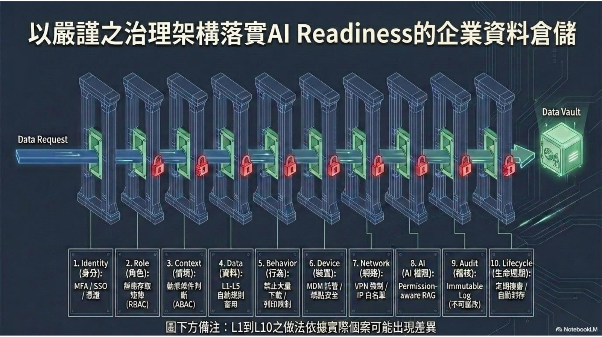
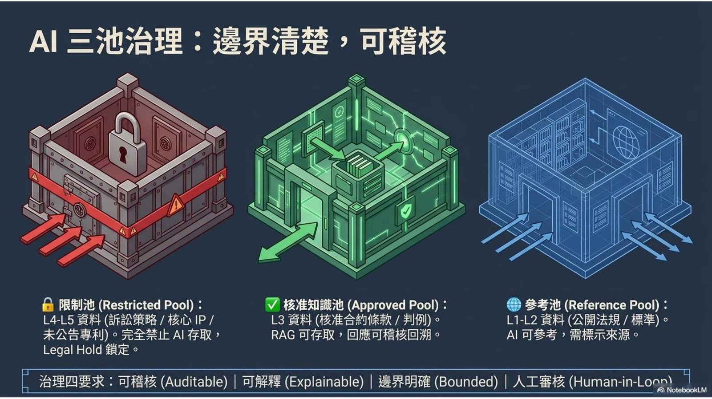

摘要
演講由法務與智慧財產角度出發，說明企業導入 GenAI 時如何結合 ISO 27001 資訊安全管理制度、台灣 TIPS 智慧財產管理制度與法規遵循，建構一套兼顧創新與風險控管的企業級治理架構。內容聚焦於一套十層零信任資料治理管線，以及將 AI 可存取資料依機敏程度劃分為三個資料池的具體作法，讓 AI 應用在可審計、可解釋、有邊界且人在迴路中的前提下運作。
重點整理
- 提出十層零信任資料治理管線，從身分認證、角色與情境權限，一路到資料分級、行為監控、裝置與網路控管，最終導入具權限感知的 RAG 與不可竄改的稽核紀錄
- 資料依機敏程度分為 L1 至 L5 五個等級，作為存取控制與 AI 使用範圍的判斷基礎
- 提出「AI 三池治理」架構：限制池（L4-L5 機敏資料完全禁止 AI 存取）、核准知識池（L3 資料可供 RAG 使用並可稽核追溯）、參考池（L1-L2 公開資料可供 AI 參考但須註明出處）
- 治理架構須同時滿足可審計（Auditable）、可解釋（Explainable）、有邊界（Bounded）與人在迴路中（Human-in-the-loop）四項要求
- 將 ISO 27001 資安管理、TIPS 智慧財產管理制度與法規遵循三者結合，作為 GenAI 導入的整體治理框架
重點圖片／架構圖


法務與智財視角下的 GenAI 治理需求
講者以法務長暨智慧財產主管的角色出發，說明企業導入 GenAI 不能只考慮技術可行性，還需同步兼顧資訊安全、智慧財產保護與法規遵循。演講將 ISO 27001 資訊安全管理制度、台灣 TIPS（智慧財產管理制度）與法遵要求三者結合，形成一套企業級的 AI、智慧財產與敏感資料治理架構，目的是讓創新與風險控管可以並行。
十層零信任資料治理管線
演講展示一套通往安全「Data Vault」的十層零信任管線：第一層身分認證（MFA/SSO）、第二層角色權限（RBAC）、第三層情境權限（ABAC）、第四層資料分級規則（L1 至 L5）、第五層行為監控（防止大量下載或列印）、第六層裝置管理（MDM）、第七層網路控管（VPN/IP 白名單）、第八層具權限感知的 AI（RAG）、第九層不可竄改的稽核紀錄，以及第十層生命週期管理（定期審查與自動歸檔）。這套多層防護機制確保資料在被 AI 存取前經過層層驗證與控管。
AI 三池治理架構
為了讓 AI 存取資料的邊界清楚且可稽核，演講提出「AI 三池治理」：限制池（Restricted Pool）存放 L4-L5 等級的機敏資料，例如訴訟策略、核心智慧財產與未公開專利，AI 完全禁止存取並處於法律保留鎖定狀態；核准知識池（Approved Pool）存放 L3 等級已核准的合約條款或案例法，可供 RAG 檢索使用，且回應內容可稽核追溯；參考池（Reference Pool）則存放 L1-L2 等級的公開法規與標準，AI 可以參考但必須註明出處。
治理架構的四項核心要求
整套架構的設計原則要求所有 AI 應用必須同時滿足四項條件：可審計（Auditable，所有存取與回應都留有紀錄）、可解釋（Explainable，能說明回應依據）、有邊界（Bounded，明確劃分可存取資料範圍）以及人在迴路中（Human-in-the-loop，關鍵決策仍需人工把關），確保 GenAI 在企業內部的應用不會逾越智慧財產與法律風險的紅線。